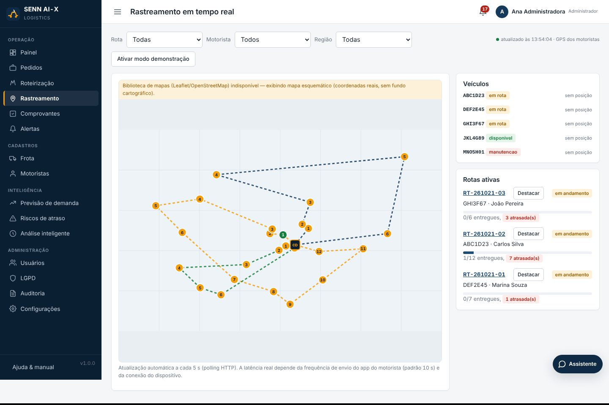
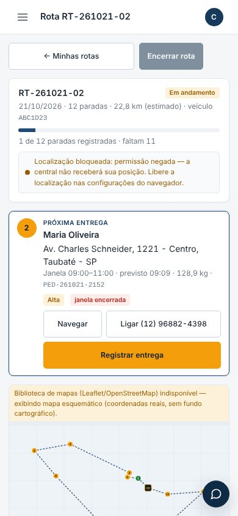

Esta é uma página de apresentação. A aplicação é um sistema PHP + PostgreSQL e roda em servidor próprio ou localmente. Hospedagens estáticas, como esta, não executam PHP. Para usar o sistema, siga o passo a passo do README do pacote de entrega (moduloA_PuroTalento.zip) ou do repositório no GitHub, que é privado e acessível apenas a colaboradores autorizados.
O que a plataforma faz
Um único sistema cobre o ciclo completo da operação, com quatro perfis de acesso (Administrador, Gestor de frota, Despachante e Motorista) e permissões verificadas no servidor.
Cadastros e importação
Usuários e perfis, frota (capacidade kg/m³, autonomia, custo/km), motoristas com validação de CNH × veículo e pedidos manuais ou por CSV com relatório de erros por linha.
Roteirização otimizada
Otimizador VRPTW próprio com capacidade, autonomia, janelas de entrega, jornada e prioridades. Simulação no mapa antes de salvar e motivo para cada pedido não roteirizado.
Rastreamento
Mapa com veículos, rotas e status, filtros e atualização automática. Posições GPS vêm do app do motorista; o modo demonstração é sempre identificado como simulação.
Comprovação de entrega
Código de confirmação, assinatura na tela ou foto, com geolocalização quando autorizada, hash do arquivo e trilha de auditoria.
Previsão e risco
Demanda prevista por região para 7 e 30 dias, com intervalo e erro de backtesting. Pontuação de risco de atraso de 0 a 100 com os fatores e as ações sugeridas.
Gestão e assistente
Painel com OTD, custo por entrega e ocupação da frota, exportação PDF/Excel, alertas automáticos, análise de gargalos e o assistente SENN AI-X Helper.
Telas do sistema
Capturas reais feitas durante os testes automatizados em navegador, com dados fictícios de demonstração. Como o ambiente de teste não tinha internet, o mapa aparece no modo esquemático de reserva; com internet, ele usa OpenStreetMap. As 14 telas da plataforma estão na galeria de telas, e a biblioteca de componentes, em Design no Figma.


Inteligência artificial, com transparência
Separamos o que foi usado para construir o sistema do que o sistema executa. Os números exibidos são sempre calculados pela aplicação.
- Metaheurística de roteirização VRPTW (inserção regret-2 e busca local 2-opt, Or-opt, relocate e swap).
- Previsão de demanda por modelo estatístico local (tendência e sazonalidade semanal), com reserva de média móvel identificada.
- Risco de atraso por regras ponderadas e explicáveis. Não é um modelo treinado e não inventa probabilidades.
- Assistente com dados filtrados pelo perfil do usuário. Um modelo de linguagem é opcional; sem ele, funciona em modo de regras identificado.
- Código, testes e documentação produzidos com apoio do assistente de programação Claude (Anthropic).
- Esse assistente não faz parte da aplicação nem é chamado por ela.
- A integração com IA generativa é opcional e depende de uma chave própria configurada no servidor.
Validação
Resultados da execução de 21/10/2026 no ambiente de desenvolvimento (PHP 8.3, PostgreSQL 16, Chromium).
| Item | Situação |
|---|---|
| RF01–RF13 e RNF01–RNF09 | Concluído e validado |
| Roteamento viário OSRM, geocodificação Nominatim, mapas Leaflet/OSM | Implementado, não validado sem internet no ambiente de testes; as alternativas de reserva foram validadas |
| Envio de e-mail (SMTP) e IA generativa | Implementado, não validado sem servidor ou chave configurados |
| Banco MySQL 8 | Implementado, não validado PostgreSQL é o caminho validado |
Como executar
Pré-requisitos: PHP 8.2+ (com pdo_pgsql, mbstring, curl, fileinfo, zip e gd) e PostgreSQL 13+. Não há dependências de terceiros para instalar. O passo a passo completo, com variações para Windows e solução de problemas, está na seção 10 do README.
- Descompacte
moduloA_PuroTalento.zipe abra um terminal na pasta. - Crie o usuário e o banco
sennaixno PostgreSQL. - Copie
.env.examplepara.env; a senha do banco deve ser a mesma do passo 2. - Crie as tabelas e, se quiser, carregue os dados de demonstração.
- Inicie o servidor e acesse
http://localhost:8080.
# PostgreSQL CREATE USER sennaix WITH PASSWORD 'troque_esta_senha'; CREATE DATABASE sennaix OWNER sennaix; # na pasta do projeto cp .env.example .env php database/migrate.php php database/seed.php # opcional php -S 0.0.0.0:8080 -t public public/index.php
Tecnologias
Backend
PHP 8 com arquitetura MVC própria, PDO com consultas preparadas, RBAC, CSRF e cabeçalhos de segurança.
Dados
PostgreSQL (validado) ou MySQL, backup e restauração, retenção e anonimização conforme a LGPD.
Frontend
HTML, CSS e JavaScript sem framework, Leaflet + OpenStreetMap com mapa de reserva e gráficos SVG próprios.